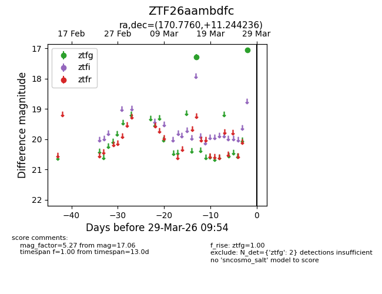
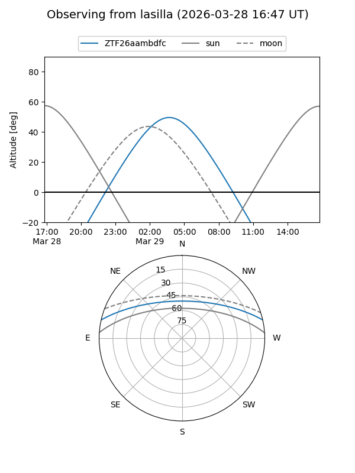
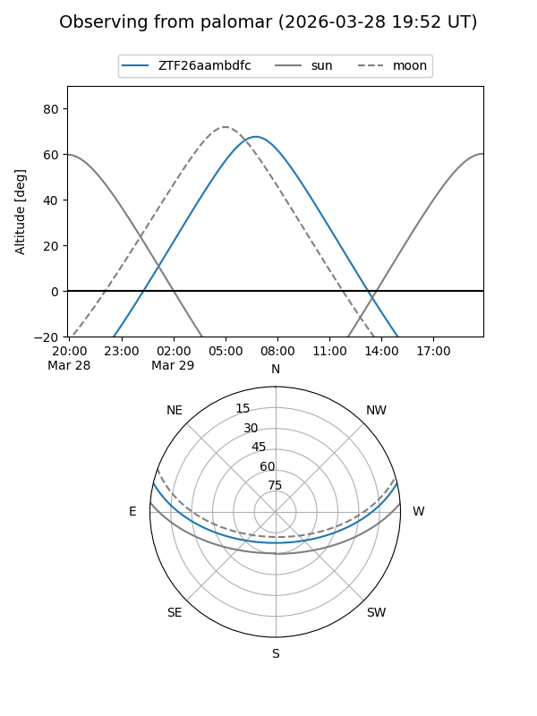

ZTF26aambdfc
Target ZTF26aambdfc at 2026-03-29 09:57
Aliases and brokers:
FINK: link
Lasair: link
ALeRCE: link
alt names
ZTF26aambdfc (ztf,fink_ztf)
Coordinates:
equatorial (ra, dec) = 170.7760,+11.24424
equatorial (HMS+DMS) = 11:23:06.23,+11:14:39.25
galactic (l, b) = (246.0866,+63.86761)
Flags:
Photometry:
last ztfg=17.06
2 ztfg detections
Lightcurve

Visibility


Additional plots